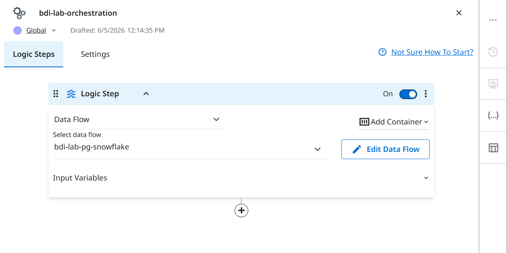
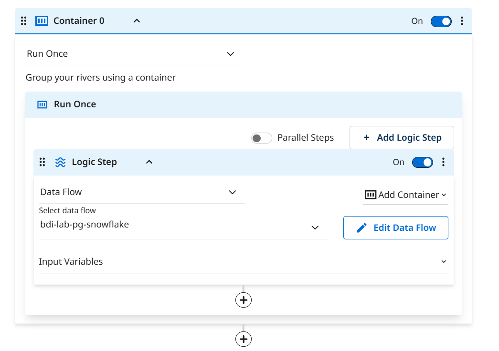
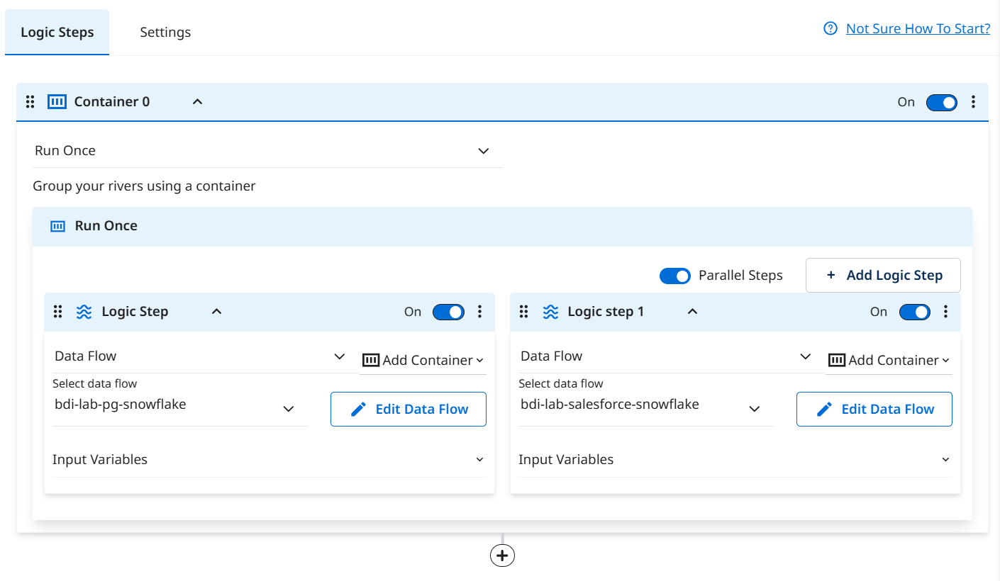
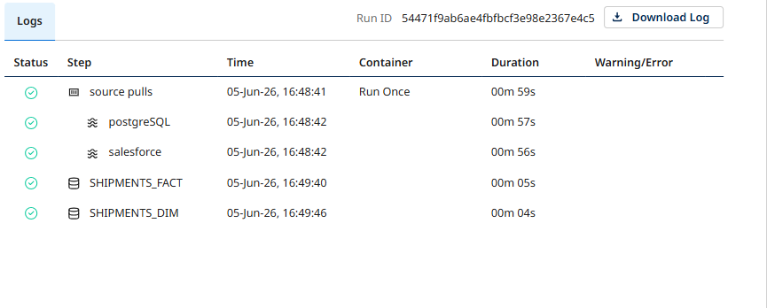

Orchestrate: Containers, Parallel Runs & Transformations
Automate the entire pipeline with parallel ingestion followed by push-down SQL transformations — all in one Logic Flow.
What you'll build
So far you ran each data flow manually. In the real world you want one automated pipeline that runs both ingestions in parallel, then applies SQL transformations joining the PostgreSQL and Salesforce data into analytics-ready tables.
Logic Flow: bdi-lab-orchestration
Container (parallel)
├── Postgres → Snowflake ┐ run simultaneously
└── Salesforce → Snowflake ┘
SQL Transformation → BDI_LAB.ANALYTICS.SHIPMENTS_FACT
SQL Transformation → BDI_LAB.ANALYTICS.SHIPMENTS_DIMCreate the Logic Flow
- 1
Create a new Logic Flow and name it bdi-lab-orchestration.
- 2
In the Logic Step provided, choose Data Flow from the first dropdown. In the Select data flow dropdown, choose bdi-lab-postgres-snowflake from Exercise 1.

Add a Parallel Container
Group both ingestion flows and enable parallel execution.
- 1
Click the Add Container dropdown in the top right of the Logic Flow editor. Choose Run Once from the Container options.

- 2
Click +Add Logic Step inside the Container. Set this new step to bdi-lab-salesforce-snowflake from Exercise 2.
- 3
Toggle ON the Parallel Steps switch inside the Container. This kicks off both steps simultaneously.

- 4
Click Save.
Add Push-Down SQL Transformations
Add two sequential SQL steps that join PostgreSQL and Salesforce data inside Snowflake.
- 1
Click the + button below the Container to add a sequential step. Choose SQL/DB Transformations, then Snowflake, then your connection.

- 2
In the Source section of the Logic step, paste the first query:
select shipment.id as shipment_id, shipment.wms_shipment_number, shipment.carrier_id, shipment.status, shipment.scheduled_pickup, shipment.actual_pickup, shipment.scheduled_delivery, shipment.actual_delivery, shipment.weight_kg, shipment.volume_cbm, shipment.declared_value_usd, shipment.status_gap_minutes, account.id as account_id from bdi_lab.raw.shipments shipment left join bdi_lab.raw.account account on account.id = shipment.salesforce_account_id where shipment.salesforce_account_id is not nullIn the Target section: Database
BDI_LAB, SchemaANALYTICS, TableSHIPMENTS_FACT, Loading Mode Overwrite. - 3
Add a second SQL Transformation step with the dimensional query:
select shipment.id as shipment_id, shipment.status, shipment.scheduled_pickup, shipment.actual_pickup, shipment.scheduled_delivery, shipment.actual_delivery, account.name as account_name, account.account_type__c as account_type, carrier.name as carrier_name, carrier.country_code, driver.first_name || ' ' || driver.last_name as driver_name, vehicle.vehicle_type, vehicle.year as vehicle_year from bdi_lab.raw.shipments shipment left join bdi_lab.raw.account account on account.id = shipment.salesforce_account_id left join bdi_lab.raw.carriers carrier on carrier.id = shipment.carrier_id left join bdi_lab.raw.driver_assignments da on da.shipment_id = shipment.id left join bdi_lab.raw.drivers driver on driver.id = da.driver_id left join bdi_lab.raw.vehicles vehicle on vehicle.id = da.vehicle_id where shipment.salesforce_account_id is not nullIn Target: Database
BDI_LAB, SchemaANALYTICS, TableSHIPMENTS_DIM, Loading Mode Overwrite.
Run & Verify the Orchestration
- 1
Click Run on the Logic Flow. Open the run tree and watch each step light up green.

- 2
In the Activities page, confirm all steps completed with row counts.

- 3
In Snowsight, confirm the analytics tables were created:
SELECT COUNT(*) FROM BDI_LAB.ANALYTICS.SHIPMENTS_FACT; SELECT COUNT(*) FROM BDI_LAB.ANALYTICS.SHIPMENTS_DIM;
Next up